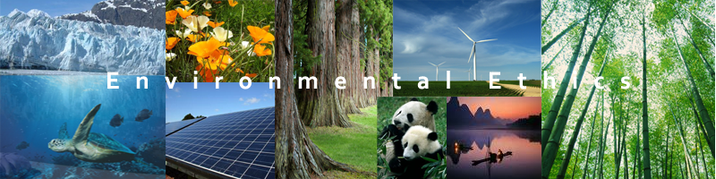

Environmental Ethics
PHIL 5 is an introductory course on theories of environmental ethics and how they are applied to sustainability and environmental issues. Both traditional and contemporary, Western and non-Western theories are studied to learn various outlooks on how humans should live in nature, including how we relate to the environment, the future generations and other species. The ideas and principles are then used to find solutions to the challenges we face today such as resource depletion, pollution, climate change and species extinction.